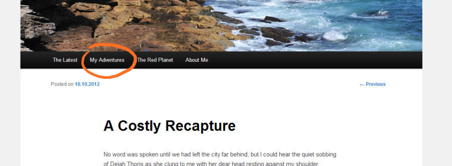
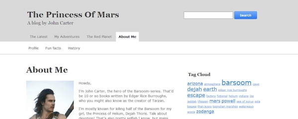
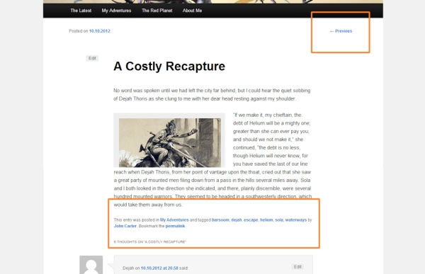
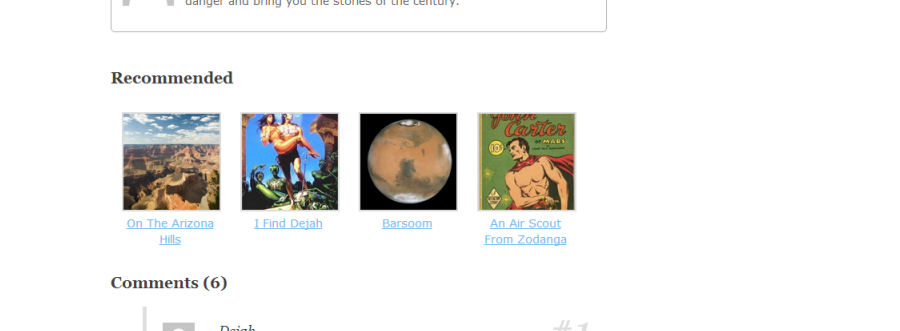
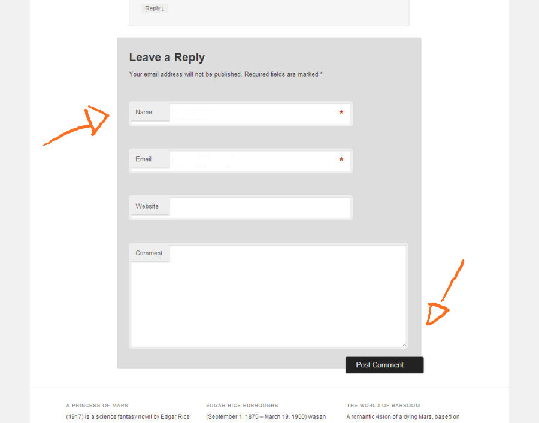
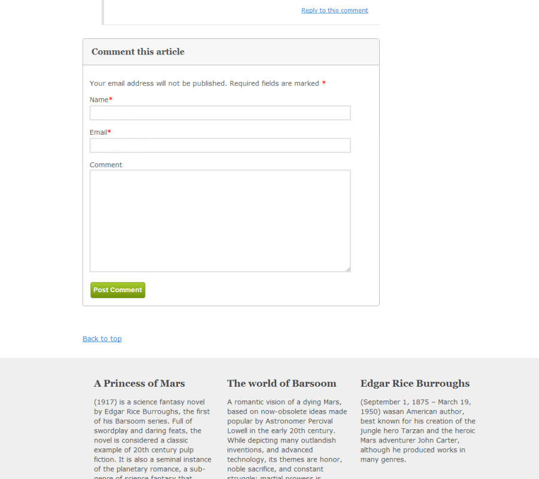
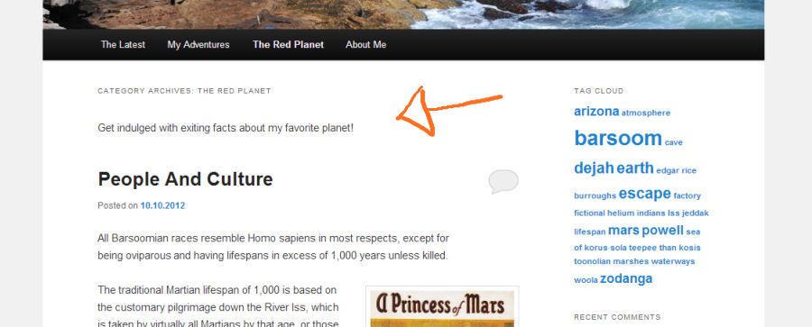
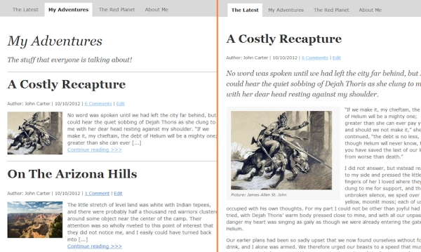
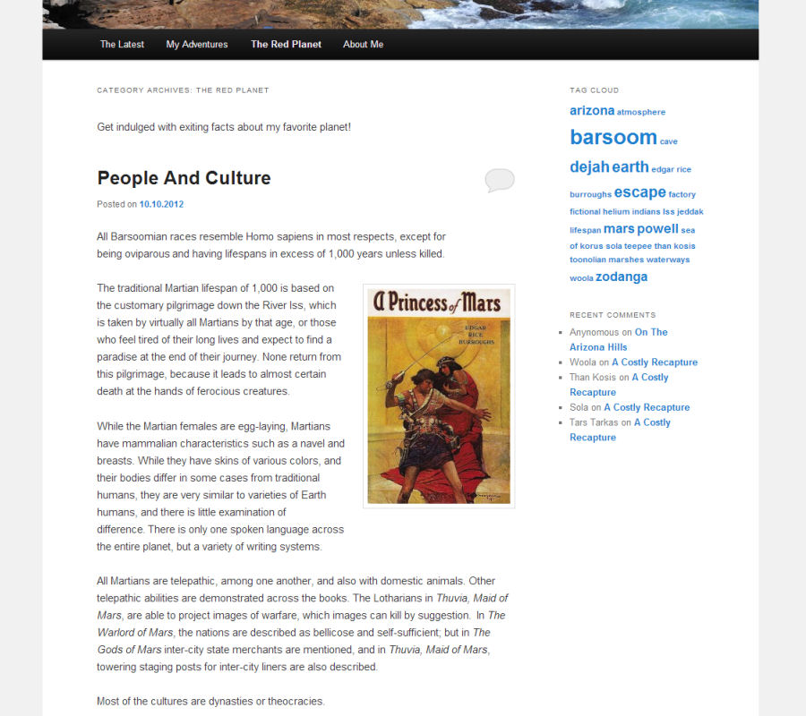
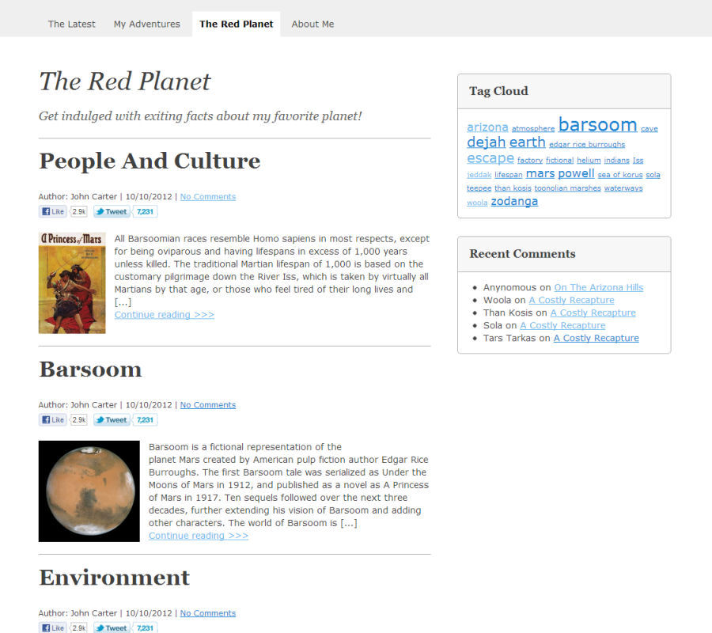

Wordpress, my way

Once I installed Wordpress for a first time, and didn't like what I saw: The default theme just didn't cut it. So, I made my own. The thing I learned is that I will not do it again. Unless I really have to. It can be constant uphill battle to fix some fundamentals of a good user experience. Yes, I'm looking at you hover-with-no-sense-of-location-or-state-menus. Though I did get it done, return for time invested was not that great. The good thing is that after I have walked the walk, I know what to look for when on theme-shopping spree.
Attention reader: This article was written 2012 in comparison to twenty-eleven, the default theme at that time. Though some of the points have been fixed in later iterations, some still apply.
Problem #1
Menu doesn't indicate current location of user or indicator is ambigious. 
Fix #1
Tabbed menu allows users to better locate themselves in the hierarcy of the site. 
Problem #2
Navigation between articles is in the scope of all posts, though users may come through filtered listing. 
Fix #2
Recommendations help users to find new articles suggested by their interests. This can increase time single user spends on a website. 
Problem #3
Location and visualization of labels and buttons does not follow conventions and require extra effort to spot. 
Fix #3
Conventional placement and visualization of labels and buttons. 
Problem #4
Category listing doesn't stand out from other content. Coupled with the problem with menu, it's hard to locate yourself in the hierarchy of the website. 
Fix #4
Increased contrast between category details and other content. 
Problem #5
Category listing displays full articles, which makes it hard to scan all available content. 
Fix #5
Display thumbnail and excerpt from article in category listings. Browsing by category is more about finding interest. This helps users to get better and quicker overview of available content. 